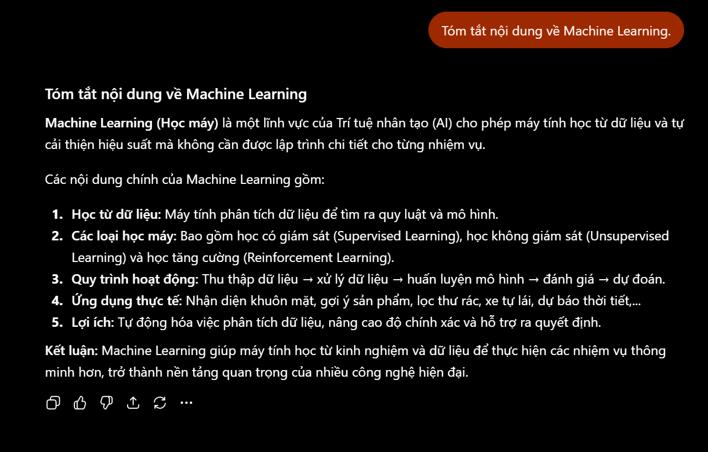
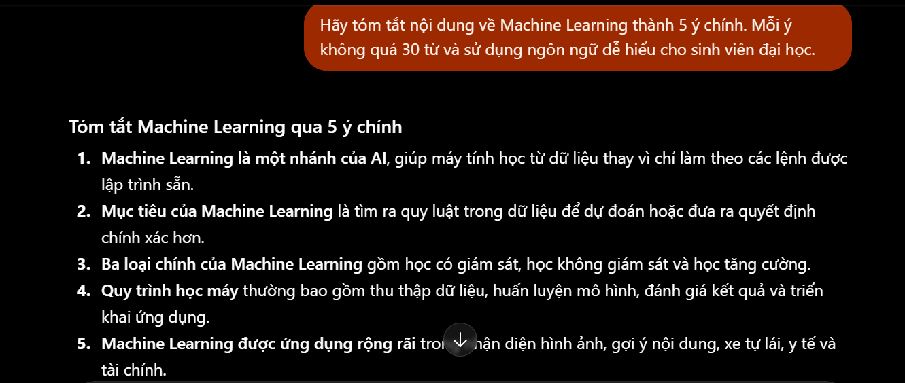
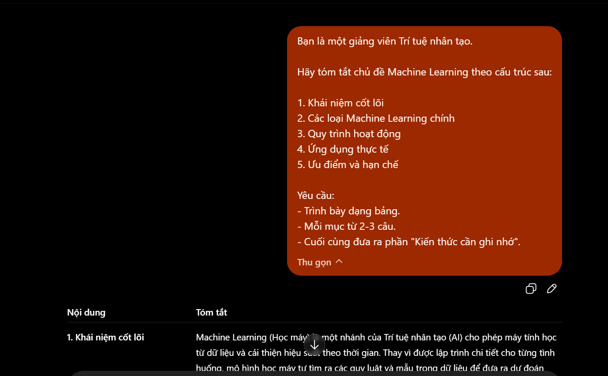
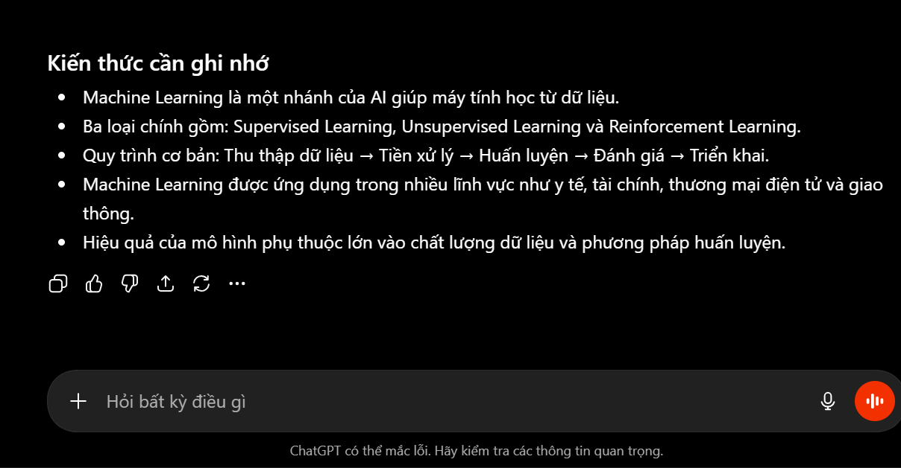

So sánh prompt cơ bản, cải tiến và nâng cao
Thực hiện tối ưu hóa cấu trúc câu lệnh qua ba tác vụ chính: tóm tắt bài báo khoa học, giải thích thuật toán học máy và tạo câu hỏi ôn tập ngôn ngữ Java.
Phân cấp cấu trúc Prompt thử nghiệm
“Tóm tắt bài viết này.”
→ AI phản hồi ngắn và tự do, dễ bỏ sót bối cảnh, phương pháp thực nghiệm khoa học.
“Tóm tắt bài viết dưới đây thành 5 ý chính, mỗi ý không quá 25 từ.”
→ Thêm ràng buộc cụ thể về số lượng ý và độ dài tệp giúp thông tin cô đọng, dễ đọc lướt nhanh.
“Bạn là chuyên gia nghiên cứu khoa học máy tính uy tín. Hãy đọc hiểu tài liệu dưới đây, phân tích và trích xuất thông tin: Luận điểm chính, Phương pháp thực nghiệm, Kết quả đo lường và Kết luận. Trình bày thông tin trích xuất dưới dạng bảng so sánh.”
→ Định hình vai trò chuyên gia, định nghĩa rõ các tiêu chí cấu trúc đầu ra, yêu cầu định dạng bảng giúp dữ liệu phân tích cực kỳ sâu sắc và dễ sử dụng.
Bảng đối chiếu chất lượng phản hồi
Nhận xét về cơ chế hoạt động của Prompt nâng cao
Khi cung cấp đầy đủ các yếu tố: Vai trò + Bối cảnh + Nhiệm vụ + Định dạng đầu ra + Ràng buộc tiêu chí, mô hình AI sẽ phân bổ trọng số attention tập trung hơn vào phần dữ liệu yêu cầu, giảm thiểu hiện tượng "ảo tưởng" (hallucination) và tạo ra thông tin có giá trị học tập, nghiên cứu thực sự.
Thư viện ảnh minh chứng (Click vào ảnh để phóng to)



